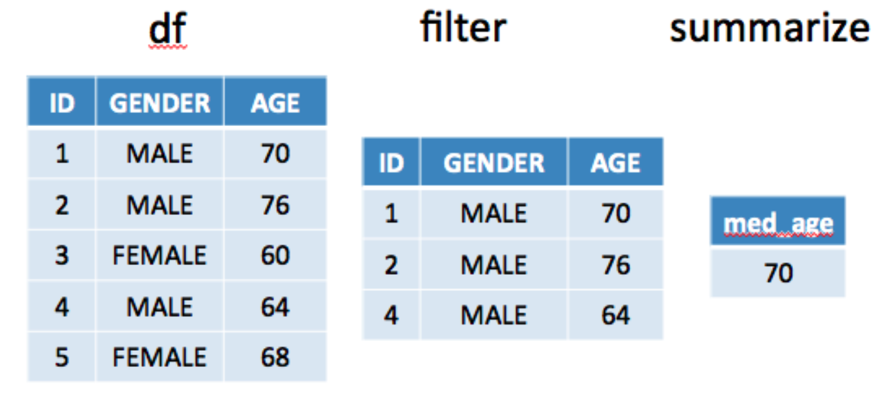

Chapter 4 Using Pipes
This pattern of using group_by() followed by summarize() is called Split Apply Combine. The idea is that we
- Split up the data frame by gender group
- Then for each group, apply the average function
- Then combine the average results with each group
## # A tibble: 5 x 3
## # Groups: gender [2]
## id gender age
## <int> <fct> <dbl>
## 1 1 MALE 70
## 2 2 MALE 76
## 3 3 FEMALE 60
## 4 4 MALE 64
## 5 5 FEMALE 68
4.1 What Are Pipes ?
Before moving forward let us consider the “pipe” operator that is included with the dplyr - well actually magrittr package. This is used to make it possible to “pipe” the results of one command into another command and so on.
The inspiration for this comes from the UNIX/LINUX operating system where pipes are used all the time. So in effect using “pipes” is nothing new in the world of research computation. Warning: Once you get used to pipes it is hard to go back to not using them.
Let’s use the mtcars data frame to illustrate the basics of the piping mechanism as used by dplyr. Here we will select the mpg and am column from mtcars and view the top 5 rows.
## mpg am
## Mazda RX4 21.0 1
## Mazda RX4 Wag 21.0 1
## Datsun 710 22.8 1
## Hornet 4 Drive 21.4 0
## Hornet Sportabout 18.7 0
## Valiant 18.1 0Okay, how would we do this using pipes ? Whoa !
## mpg am
## Mazda RX4 21.0 1
## Mazda RX4 Wag 21.0 1
## Datsun 710 22.8 1
## Hornet 4 Drive 21.4 0
## Hornet Sportabout 18.7 0
## Valiant 18.1 0Break this down:
## mpg am
## Mazda RX4 21.0 1
## Mazda RX4 Wag 21.0 1
## Datsun 710 22.8 1
## Hornet 4 Drive 21.4 0
## Hornet Sportabout 18.7 0
## Valiant 18.1 0
## Duster 360 14.3 0
## Merc 240D 24.4 0
## Merc 230 22.8 0
## Merc 280 19.2 0
## Merc 280C 17.8 0
## Merc 450SE 16.4 0
## Merc 450SL 17.3 0
## Merc 450SLC 15.2 0
## Cadillac Fleetwood 10.4 0
## Lincoln Continental 10.4 0
## Chrysler Imperial 14.7 0
## Fiat 128 32.4 1
## Honda Civic 30.4 1
## Toyota Corolla 33.9 1
## Toyota Corona 21.5 0
## Dodge Challenger 15.5 0
## AMC Javelin 15.2 0
## Camaro Z28 13.3 0
## Pontiac Firebird 19.2 0
## Fiat X1-9 27.3 1
## Porsche 914-2 26.0 1
## Lotus Europa 30.4 1
## Ford Pantera L 15.8 1
## Ferrari Dino 19.7 1
## Maserati Bora 15.0 1
## Volvo 142E 21.4 1The key to understanding how this works is to read this from left to right. Let’s use our new found knowledge to reimagine our use of the group_by and summarize functions.
## # A tibble: 2 x 2
## gender avg
## <fct> <dbl>
## 1 FEMALE 64
## 2 MALE 70## # A tibble: 2 x 2
## gender avg
## <fct> <dbl>
## 1 FEMALE 64
## 2 MALE 70This approach allows us to build a “pipeline” containing commands. We don’t have to commit to a specific sequence. This enables a free-form type of exploration.
## # A tibble: 2 x 3
## gender avg total
## <fct> <dbl> <int>
## 1 FEMALE 64 2
## 2 MALE 70 3What is the median age of all males ?
## med_age
## 1 70